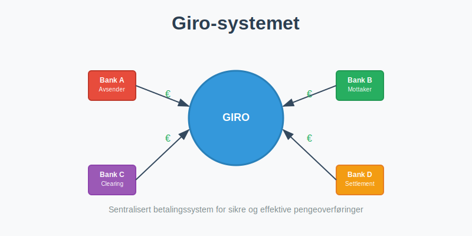
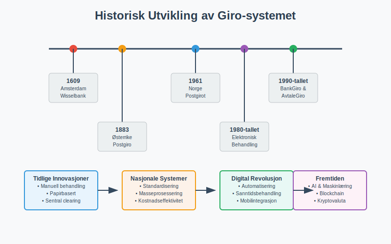
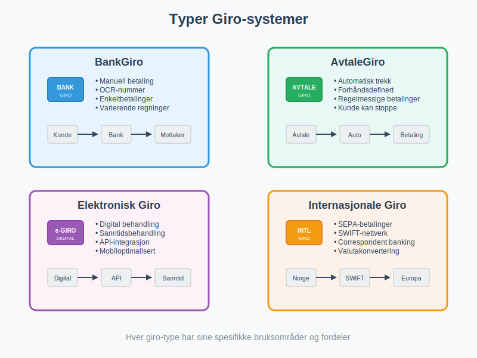
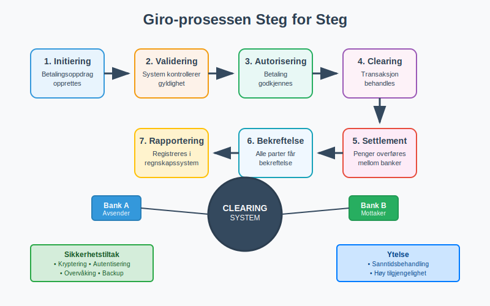
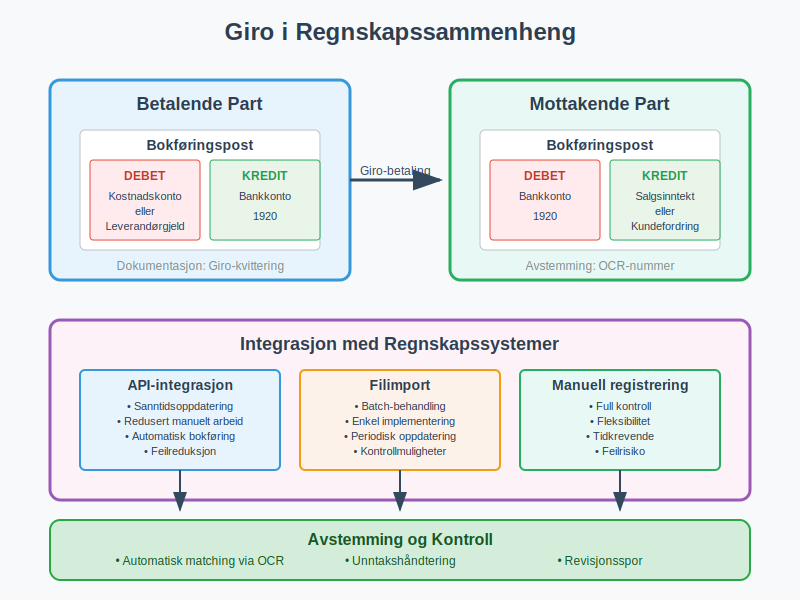
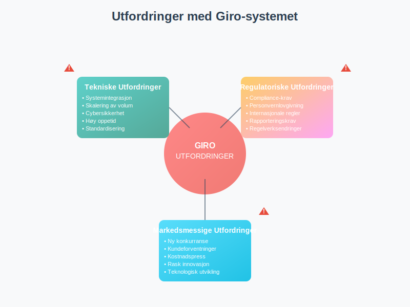
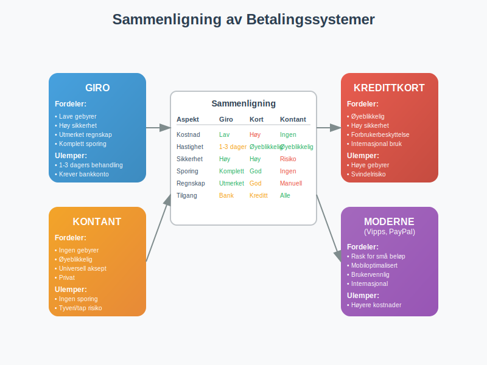
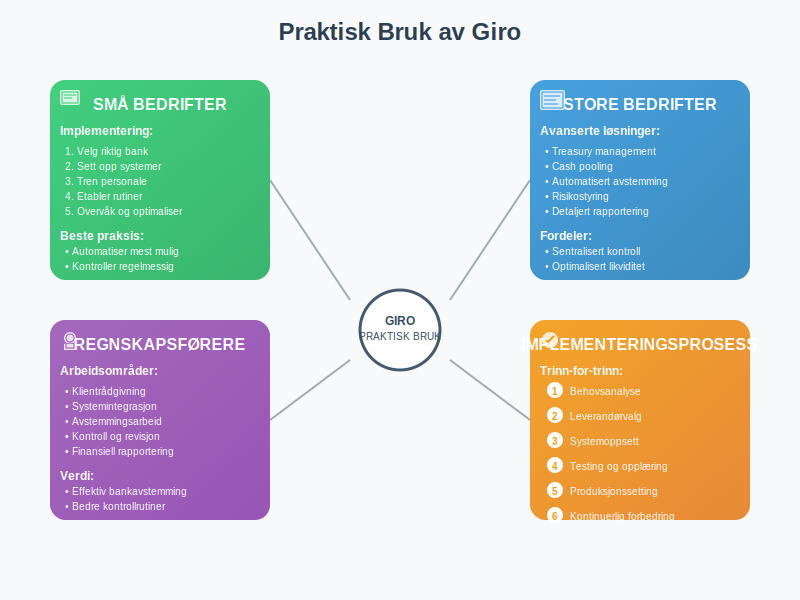
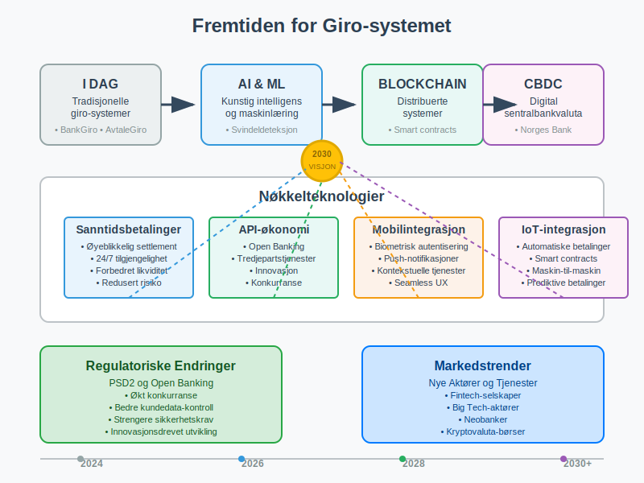
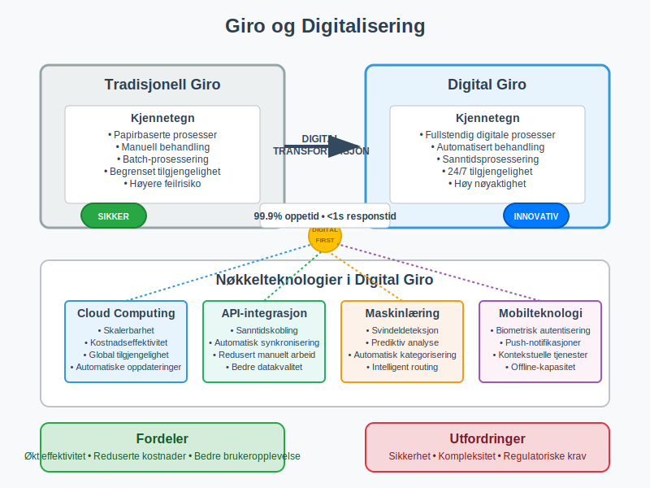

Giro er et fundamentalt betalingssystem som har revolusjonert måten vi håndterer pengeoverføringer og regningsbetalinger på. Som grunnlaget for moderne elektroniske betalingsløsninger som AvtaleGiro og BankGiro, representerer giro-systemet en av de viktigste innovasjonene innen moderne betalingsmidler. For bedrifter og privatpersoner er forståelse av giro-systemet essensielt for effektiv regnskapsføring og økonomisk styring.

Hva er Giro?
Giro er et betalingssystem som gjør det mulig å overføre penger mellom kontoer ved hjelp av standardiserte skjemaer og prosedyrer. Ordet “giro” kommer fra italiensk og betyr “sirkel” eller “runde”, som refererer til sirkulasjonen av penger gjennom systemet.
Hovedprinsippene i giro-systemet:
- Standardiserte prosedyrer: Faste rutiner for behandling av betalinger
- Sentral clearing: Alle transaksjoner behandles gjennom et sentralt system
- Automatisering: Redusert behov for manuell behandling
- Sporbarhet: Alle transaksjoner kan følges og dokumenteres
- Sikkerhet: Kontrollerte prosesser reduserer risiko for feil
Dette systemet danner grunnlaget for det moderne norske betalingslandskapet og er integrert i de fleste ERP-systemer som brukes i norsk næringsliv.

Historisk Utvikling
Opprinnelse og Tidlige Utvikling
Giro-systemet har sine røtter tilbake til 1600-tallet i Europa:
- 1609: Amsterdams Wisselbank etablerte tidlige giro-tjenester
- 1883: Østerrike innførte det første nasjonale postgirosystemet
- 1920-tallet: Flere europeiske land adopterte giro-systemer
Giro i Norge
Norges utvikling av giro-systemet:
| År | Milepæl | Betydning |
|---|---|---|
| 1961 | Postgirot etableres | Første nasjonale giro-system i Norge |
| 1970-tallet | Bankenes giro-tjenester | Kommersielle banker innfører giro |
| 1980-tallet | Elektronisk behandling | Automatisering av giro-prosesser |
| 1990-tallet | BankGiro og AvtaleGiro | Moderne elektroniske giro-tjenester |
| 2000-tallet | Internett og mobilgiro | Digital revolusjon i betalinger |
Moderne Utvikling
Dagens giro-system kjennetegnes av:
- Digital integrasjon: Seamless kobling til nettbank og mobilapper
- Sanntidsbetalinger: Øyeblikkelig behandling av transaksjoner
- API-integrasjon: Kobling til regnskapssystemer
- Kunstig intelligens: Automatisk behandling og feildeteksjon

Typer Giro-systemer
1. BankGiro
BankGiro er det mest utbredte giro-systemet i Norge:
- Funksjon: Manuell betaling av regninger med OCR-nummer
- Prosess: Kunde fyller ut giroblanketter eller betaler via nettbank
- Avstemming: Automatisk kobling mellom betaling og faktura
- Bruksområde: Enkeltbetalinger og varierende regninger
2. AvtaleGiro
AvtaleGiro bygger på giro-prinsippene med automatisering:
- Funksjon: Automatisk trekk av regninger
- Prosess: Forhåndsdefinerte avtaler mellom kunde og leverandør
- Kontroll: Kunde kan stoppe eller endre avtaler
- Bruksområde: Regelmessige betalinger som husleie og forsikringer
3. Elektronisk Giro (eGiro)
Moderne elektroniske giro-løsninger:
- Digital behandling: Fullstendig elektronisk prosessering
- Sanntid: Øyeblikkelig behandling og bekreftelse
- Integrasjon: Direkte kobling til regnskapssystemer
- Mobiloptimalisering: Tilpasset mobile enheter
4. Internasjonale Giro-systemer
Grenseoverskridende giro-tjenester:
- SEPA: Single Euro Payments Area for europeiske betalinger
- SWIFT: Internasjonale bankoverføringer
- Correspondent banking: Samarbeid mellom internasjonale banker

Hvordan Fungerer Giro-systemet?
Teknisk Arkitektur
Giro-systemet består av flere komponenter:
- Betalingsinitiatør: Kunde eller system som starter betalingen
- Betalingsmottaker: Leverandør eller mottaker av betalingen
- Clearing-system: Sentralt system som behandler transaksjoner
- Banker: Finansinstitusjoner som utfører overføringene
- Regulatorer: Myndigheter som overvåker systemet
Prosessflyt
En typisk giro-transaksjon følger denne flyten:
- Initiering: Betalingsoppdrag opprettes
- Validering: System kontrollerer oppdragets gyldighet
- Autorisering: Betalingen godkjennes av kunde eller system
- Clearing: Transaksjonen behandles i clearing-systemet
- Settlement: Penger overføres mellom bankkontoer
- Bekreftelse: Alle parter får bekreftelse på gjennomført betaling
- Rapportering: Transaksjon registreres i regnskapssystemer
Sikkerhetsmekansimer
- Kryptering: All kommunikasjon er kryptert
- Autentisering: Sterke krav til identifisering
- Autorisering: Kontroll av betalingsrettigheter
- Overvåking: Kontinuerlig overvåking av mistenkelige transaksjoner
- Backup: Sikre rutiner for datalagring og gjenoppretting

Giro i Regnskapssammenheng
Bokføringsmessige Aspekter
Giro-betalinger har spesifikke implikasjoner for bokføring:
For Betalende Part:
- Debet: Kostnadskonto eller leverandørgjeld
- Kredit: Bankkonto
- Dokumentasjon: Giro-kvittering som bilag
For Mottakende Part:
- Debet: Bankkonto
- Kredit: Salgsinntekt eller kundefordring
- Avstemming: Automatisk kobling via OCR-nummer
Integrasjon med Regnskapssystemer
Moderne giro-systemer integreres direkte med regnskapsprogrammer:
| Integrasjonstype | Fordeler | Utfordringer |
|---|---|---|
| API-integrasjon | Sanntidsoppdatering, redusert manuelt arbeid | Teknisk kompleksitet, sikkerhetshensyn |
| Filimport | Enkel implementering, batch-behandling | Forsinkelser, manuell oppfølging |
| Manuell registrering | Full kontroll, fleksibilitet | Tidkrevende, feilrisiko |
Avstemming og Kontroll
Giro-systemet letter bankavstemming:
- Automatisk matching: OCR-nummer kobler betalinger til fakturaer
- Unntakshåndtering: System identifiserer avvik som krever manuell behandling
- Rapportering: Detaljerte rapporter for regnskapsformål
- Revisjonsspor: Komplett dokumentasjon av alle transaksjoner
Fordeler med Giro-systemet
For Privatpersoner
- Enkelhet: Intuitive prosesser for betaling av regninger
- Sikkerhet: Redusert risiko sammenlignet med kontantbetalinger
- Sporbarhet: Komplett oversikt over alle betalinger
- Automatisering: Mulighet for automatiske betalinger
- Kostnadseffektivitet: Lave eller ingen gebyrer for standard giro-tjenester
For Bedrifter
- Forbedret arbeidskapital: Raskere innbetaling fra kunder
- Reduserte kostnader: Mindre manuell behandling av betalinger
- Bedre kontroll: Systematisk håndtering av inn- og utbetalinger
- Regnskapsmessige fordeler: Automatisk bokføring og avstemming
- Kundeservice: Enklere betalingsløsninger for kunder
For Samfunnet
- Effektivitet: Reduserte transaksjonskostnader for hele økonomien
- Transparens: Bedre sporing av pengestrømmer
- Finansiell inkludering: Tilgang til betalingstjenester for alle
- Innovasjon: Grunnlag for nye finansielle tjenester
- Miljøvennlighet: Redusert bruk av papir og fysisk transport

Utfordringer og Begrensninger
Tekniske Utfordringer
- Systemintegrasjon: Kompleks kobling mellom ulike systemer
- Skalering: Håndtering av økende transaksjonsvolum
- Sikkerhet: Beskyttelse mot cybertrusler og svindel
- Oppetid: Krav til høy tilgjengelighet og pålitelighet
- Standardisering: Behov for felles standarder på tvers av aktører
Regulatoriske Utfordringer
- Compliance: Overholdelse av finansreguleringer
- Personvern: Beskyttelse av sensitive betalingsdata
- Grenseoverskridende: Håndtering av internasjonale reguleringer
- Rapportering: Krav til rapportering til myndigheter
- Endringer: Tilpasning til nye regulatoriske krav
Markedsmessige Utfordringer
- Konkurranse: Nye aktører som utfordrer tradisjonelle banker
- Kundeforventninger: Økende krav til brukeropplevelse
- Kostnadspress: Behov for kostnadseffektive løsninger
- Innovasjon: Rask teknologisk utvikling krever kontinuerlig tilpasning

Giro vs. Andre Betalingssystemer
Giro vs. Kredittkort
| Aspekt | Giro | Kredittkort |
|---|---|---|
| Kostnader | Lave gebyrer | Høyere gebyrer for handelsmenn |
| Behandlingstid | 1-3 bankdager | Øyeblikkelig autorisering |
| Sikkerhet | Høy, bankbasert | Høy, men risiko for svindel |
| Tilgjengelighet | Krever bankkonto | Krever kredittgodkjenning |
| Regnskapsintegrasjon | Utmerket | God, men krever ekstra behandling |
Giro vs. Kontant
| Aspekt | Giro | Kontant |
|---|---|---|
| Sporbarhet | Komplett dokumentasjon | Ingen sporing |
| Sikkerhet | Høy | Risiko for tyveri/tap |
| Bekvemmelighet | Høy for større beløp | Praktisk for små beløp |
| Regnskapsføring | Automatisk | Manuell registrering |
| Kostnader | Lave | Ingen direkte kostnader |
Giro vs. Moderne Betalingsløsninger
- Vipps/Mobile Pay: Raskere for små beløp, men bygger på giro-infrastruktur
- PayPal/Stripe: Internasjonale løsninger, men høyere kostnader
- Kryptovaluta: Desentralisert, men regulatorisk usikkerhet
- CBDC: Fremtidens digitale sentralbankvaluta

Praktisk Bruk av Giro
For Små Bedrifter
Implementering av giro-løsninger:
- Velg riktig bank: Sammenlign tilbud fra ulike banker
- Sett opp systemer: Integrer med regnskapssystem
- Tren personale: Sørg for at ansatte forstår prosessene
- Etabler rutiner: Lag faste prosedyrer for håndtering
- Overvåk og optimaliser: Kontinuerlig forbedring av prosesser
Beste praksis:
- Automatiser mest mulig: Reduser manuelt arbeid
- Kontroller regelmessig: Utfør månedlige avstemminger
- Dokumenter alt: Oppretthold god dokumentasjon
- Sikkerhet først: Implementer sterke sikkerhetstiltak
- Kundeservice: Gjør det enkelt for kunder å betale
For Store Bedrifter
Avanserte giro-implementeringer:
- Treasury management: Sentralisert håndtering av alle betalinger
- Cash pooling: Optimalisering av likviditet på tvers av enheter
- Automatisert avstemming: Fullstendig automatisering av regnskapsprosesser
- Risikostyring: Avanserte systemer for å håndtere betalingsrisiko
- Rapportering: Detaljerte analyser av betalingsmønstre
For Regnskapsførere
Giro i regnskapsarbeid:
- Klientrådgivning: Hjelpe klienter med valg av betalingsløsninger
- Systemintegrasjon: Sette opp kobling mellom bank og regnskapssystem
- Avstemmingsarbeid: Effektiv håndtering av bankavstemming
- Kontroll og revisjon: Bruke giro-data til kontrollformål
- Rapportering: Utnytte giro-data til finansiell rapportering

Fremtiden for Giro-systemet
Teknologiske Trender
Kunstig Intelligens og Maskinlæring:
- Svindeldeteksjon: Automatisk identifisering av mistenkelige transaksjoner
- Prediktiv analyse: Forutsigelse av betalingsmønstre
- Personalisering: Tilpassede betalingsløsninger basert på brukeradferd
- Automatisering: Intelligent håndtering av unntak og feil
Blockchain og Distribuerte Systemer:
- Desentralisert clearing: Redusert avhengighet av sentrale systemer
- Smart contracts: Automatiske betalinger basert på forhåndsdefinerte betingelser
- Transparens: Økt sporbarhet og tillit i betalingssystemet
- Kostnadsreduksjon: Eliminering av mellommenn i betalingskjeden
Regulatoriske Endringer
PSD2 og Open Banking:
- Økt konkurranse: Nye aktører får tilgang til betalingsmarkedet
- Bedre tjenester: Innovasjon drevet av økt konkurranse
- Kundedata: Bedre kontroll over egne finansielle data
- Sikkerhet: Strengere krav til autentisering og autorisering
Bærekraft og ESG:
- Miljøvennlige betalinger: Redusert karbonavtrykk fra betalingssystemer
- Finansiell inkludering: Sikre at alle har tilgang til betalingstjenester
- Transparens: Bedre rapportering av samfunnsansvar
- Etiske investeringer: Kobling mellom betalinger og bærekraftige investeringer
Markedsutviklingen
Nye Aktører:
- Fintech-selskaper: Innovative løsninger som utfordrer tradisjonelle banker
- Big Tech: Store teknologiselskaper som tilbyr betalingstjenester
- Kryptovaluta-børser: Alternative betalingsløsninger
- Neobanker: Digitale banker med fokus på brukeropplevelse
Endrede Kundeforventninger:
- Sanntidsbetalinger: Krav om øyeblikkelige transaksjoner
- Mobiloptimalisering: Alt må fungere perfekt på mobile enheter
- Personalisering: Tilpassede løsninger for hver enkelt kunde
- Transparens: Klar informasjon om kostnader og prosesser

Giro og Digitalisering
Digital Transformasjon
Automatisering av Regnskapsprosesser:
- OCR-teknologi: Automatisk lesing av fakturaer og betalingsinformasjon
- API-integrasjoner: Sanntidskobling mellom betalingssystemer og regnskap
- Robotisert prosessautomatisering (RPA): Automatisering av repetitive oppgaver
- Maskinlæring: Intelligent kategorisering og behandling av transaksjoner
Cloud-baserte Løsninger:
- Skalerbarhet: Enkel tilpasning til endrede behov
- Tilgjengelighet: Tilgang fra hvor som helst, når som helst
- Sikkerhet: Profesjonell sikkerhet og backup
- Kostnadseffektivitet: Reduserte IT-kostnader for bedrifter
Integrasjon med Moderne Systemer
ERP-integrasjon:
- Sanntidsoppdatering: Automatisk oppdatering av regnskapsdata
- Workflow-automatisering: Automatiske godkjenningsprosesser
- Rapportering: Integrerte rapporter på tvers av systemer
- Kontroll: Bedre intern kontroll og risikostyring
CRM-integrasjon:
- Kundeoppfølging: Automatisk oppdatering av kundebetalingsstatus
- Kredittvurdering: Bruk av betalingshistorikk til kredittvurdering
- Kundeservice: Bedre kundeservice basert på betalingsinformasjon
- Markedsføring: Segmentering basert på betalingsadferd
Internasjonale Perspektiver
Giro-systemer Globalt
Europa:
- SEPA: Harmoniserte betalinger i euroområdet
- Instant payments: Sanntidsbetalinger på tvers av landegrenser
- PSD2: Regulering som fremmer innovasjon og konkurranse
- Digital euro: Planlagt digital sentralbankvaluta
Asia:
- Kina: Avanserte mobile betalingsløsninger (Alipay, WeChat Pay)
- India: UPI (Unified Payments Interface) som nasjonalt betalingssystem
- Japan: Tradisjonelle giro-systemer kombinert med moderne teknologi
- Singapore: Ledende innen fintech og digitale betalinger
Amerika:
- USA: ACH-systemet som amerikansk ekvivalent til giro
- Brasil: PIX som moderne sanntidsbetalingssystem
- Canada: Interac som nasjonalt betalingsnettverk
- Mexico: SPEI for elektroniske overføringer
Lærdommer for Norge
- Innovasjon: Viktigheten av kontinuerlig utvikling
- Regulering: Balanse mellom sikkerhet og innovasjon
- Samarbeid: Betydningen av samarbeid mellom aktører
- Kundefokus: Sette kundeopplevelse i sentrum
Praktiske Råd og Anbefalinger
For Bedriftsledere
Strategiske Vurderinger:
- Evaluer nåværende betalingsløsninger: Kartlegg kostnader og effektivitet
- Vurder automatiseringsmuligheter: Identifiser områder for forbedring
- Invester i teknologi: Prioriter moderne betalingsløsninger
- Tren personale: Sørg for kompetanse på betalingssystemer
- Overvåk utviklingen: Hold deg oppdatert på nye teknologier
Risikostyring:
- Diversifiser betalingsløsninger: Ikke vær avhengig av én leverandør
- Implementer sikkerhetstiltak: Beskytt mot cybertrusler
- Etabler backup-rutiner: Sørg for kontinuitet ved systemfeil
- Overvåk transaksjoner: Implementer systemer for å oppdage avvik
- Dokumenter prosesser: Oppretthold god dokumentasjon
For Regnskapsførere
Profesjonell Utvikling:
- Hold deg oppdatert: Følg utviklingen innen betalingsteknologi
- Utvikle kompetanse: Lær om nye systemer og integrasjoner
- Rådgi klienter: Hjelp klienter med valg av betalingsløsninger
- Automatiser prosesser: Bruk teknologi til å effektivisere arbeidet
- Kvalitetssikre: Implementer kontroller for å sikre nøyaktighet
Klientrådgivning:
- Kartlegg behov: Forstå klientens spesifikke utfordringer
- Anbefal løsninger: Foreslå passende betalingssystemer
- Implementer systemer: Hjelp med oppsett og integrasjon
- Følg opp: Sørg for at systemene fungerer optimalt
- Optimaliser: Kontinuerlig forbedring av prosesser
Konklusjon
Giro-systemet representerer grunnsteinen i det moderne norske betalingslandskapet og har fundamentalt endret måten vi håndterer økonomiske transaksjoner på. Fra sine historiske røtter som et enkelt overføringssystem har giro utviklet seg til å bli en sofistikert teknologisk plattform som muliggjør alt fra enkle regningsbetalinger til komplekse bedriftsbetalinger.
For regnskapsførere og bedriftsledere er forståelse av giro-systemet ikke bare nyttig, men essensielt for effektiv økonomisk styring. Systemets integrasjon med moderne regnskapssystemer og ERP-løsninger gjør det mulig å automatisere mange tidkrevende prosesser og forbedre nøyaktigheten i finansiell rapportering.
Fremtiden for giro-systemet ser lovende ut, med kontinuerlig innovasjon innen kunstig intelligens, blockchain-teknologi og mobile betalingsløsninger. Samtidig vil regulatoriske endringer som PSD2 og fokus på bærekraft fortsette å forme utviklingen av betalingssystemet.
For å maksimere fordelene av giro-systemet er det viktig å investere i riktig teknologi, utvikle nødvendig kompetanse og etablere robuste prosesser som sikrer både effektivitet og sikkerhet. Med riktig tilnærming kan giro-systemet være en kraftig driver for forbedret lønnsomhet og operasjonell effektivitet i enhver organisasjon.